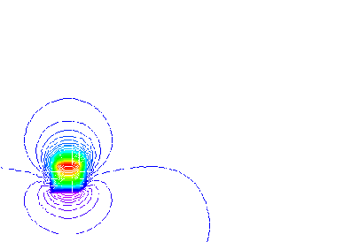
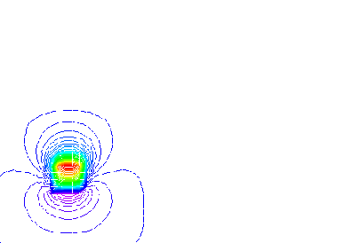
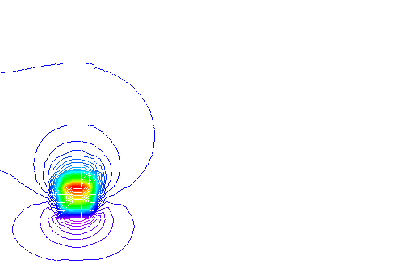
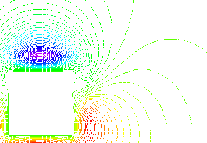
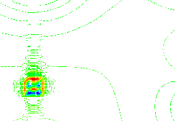
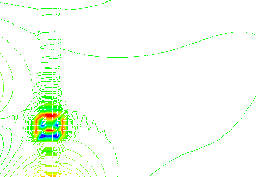
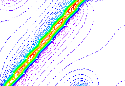
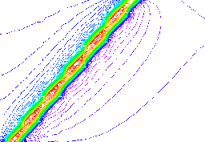
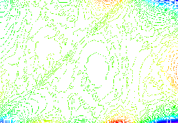

Tutorial 10: Selecting the right calculation scheme
Exercise 10: Selecting the appropriate geophysical calculation schemes
In this exercise we will compare the strengths and weaknesses of the various geophysical calculation schemes.
1) First of all create a base stratigraphy with single layer only, and with a magnetic susceptibility of zero and a density of zero. (This is important if we want to use the Full spatial calculation scheme, which skips calculations for null blocks).
2) Now create a small (500 m radius) cylindrical plug in the south west corner of the model (at location 2000,2000,5000). This will be the first test model to compare some of the idiosyncrasies of the different calculation schemes. At a 200 cube size this model actually produces a vertical square section prism.
3) Now create magnetic images with the following Geophysical Survey Options settings:
Airborne Survey: 80m
and the following Geophysical Calculation Options settings:
Spatial Full Calculation
and calculate the anomaly images by selecting Calculate Anomalies-> Anomalies from the Geophysics menu (this is the slowest calculation scheme for this model so it may take several minutes to calculate. You should get a magnetic image that looks like this:

4) Now change the Geophysical Calculation Options settings to:
Spatial Convolution
Note The Full Spatial Convolution scheme is not available in Version 6.0 of Noddy.
and recalculate the magnetics image (use a new file name!), which should now look like this:

5) Now change the Geophysical Calculation Options settings to:
Spectral and Ramp (it should already be on this setting)
and recalculate the magnetics image, which should now look like this:
6) Now change the Geophysical Calculation Options settings to:
Spectral and Reflection
and recalculate the magnetics image, which should now look like this:

7) In order to compare the results of the different schemes, load in the full spatial image as reference image (by selecting Load Reference Image-> Magnetics from the File Menu). The calculate difference images with the other three calculation schemes by selecting Difference with Reference-> Magnetics from the Geophysics menu, and selecting the .mag files associated with each scheme. The three difference images are shown below:


Spatial Convolution Spectral Ramp

Spectral Reflection
- Spatial Convolution: The difference image between the full spatial and the spatial convolution calculations shows the effect of the truncation of the calculations by the range term for the convolution scheme, within the range the calculations are essentially identical, beyond it there is a zone where the calculations become increasingly distinct until a distance beyond the range where the effects of the cylinder are not seen at all.
- Spectral Ramp: In this image two effects are seen, firstly the high frequency ringing associated with the cut off of high frequencies in the FFT calculation, and secondly the wrap around of the anomalies in the opposite corners of the model due to the assumption of a repeating model.
- Spectral Reflection: In this image two effects are seen, firstly the high frequency ringing associated with the cut off of high frequencies in the FFT calculation, and secondly the wrap around of the anomalies in the opposite corners of the model due to the assumption of a repeating model. With a reflection padding system, there are really 4 cylindrical plugs quite close together, and stronger edge effects are seen than those for the Spectral Ramp calculations.
8) In order to see a model where the Spectral reflection scheme is a better choice than the Ramp scheme, try removing the plug and replacing it with a vertical dyke with a dip direction of 130 and a position of 1000,0,5000.


Spectral Ramp Spectral Reflection
9) Finally we will compare the details of the spatial convolution and spectral schemes for a more complex model. First select New History from the File Menu (and select User Defaults). Now put in a default Base Stratigraphy, Fold, Tilt, Fault history, set the survey type to 80m Airborne, and calculate the model with a Spectral Ramp and then Spatial Convolution (range = 1800m) schemes. Finally load the Spatial magnetics image in as the Reference Data set, and calculate the difference image with the spectral magnetics image. The resulting image should look like this:

There are four differences between the spatial and spectral schemes for this more complex type of image:
- There is a high frequency signal apparent in the difference image adjacent to strong magnetic susceptibility contrasts (such as those caused by the fault).
- There are large differences in the images at the edges of the model due to the wrapping of the model in the Fourier domain calculations.
- There is an overall DC shift between the spectral calculations and the spatial calculations, as the Fourier domain calculation loses the absolute magnitude of the response during the calculation.
- The range term of the spatial convolution calculation limits the long range affect of specific areas, so there is a gentle undulation of the difference image superimposed on the previous three effects.
Noddy · open source under the MIT licence · Loop3D/noddy_qt